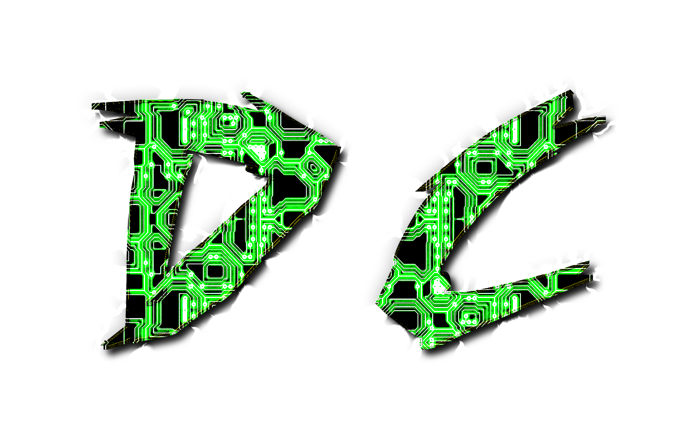

Dabblecraft Inc. is a company that offers a unique media outlet for members of our community. This outlet can be used for a variety of creative pursuits, including content creation for popular platforms such as YouTube and Twitch.
At Dabblecraft Inc., we take pride in managing our member’s content on our own media channels, which have been specifically tailored to meet their needs. This allows our members to focus on their creative endeavors while we handle the technical aspects of content management.
Our goal is to provide a platform for our community members to showcase their talents and share their creativity with the world. By using Dabblecraft Inc.'s media outlet, our members can reach a wider audience and gain more exposure for their work.